- Introduction
After logging in, you will be navigated to the DMS dashboard. DMS dashboard contains tools that can be used for many purposes.
These all will be discussed in this manual.
Doctor can scan NFC card directly to view the patient details from this screen. NFC card won't work on other screens.

1.a Feedbacks
Feedbacks for improving DMS system, error reporting and additional comments can be sent. Press feedback icon on the top
right corner next to the Search bar and fill up the form.


1.b Events and Notices
Upcoming events and notices can be easily added to the dashboard. On the side bar scroll down, find
Events and Notice. Click on them and fill up the form as required and post it on the dashboard.
NOTE:
Every account holder can view this on their dashboard and could be super useful, so it should be properly utilized.
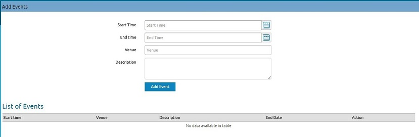
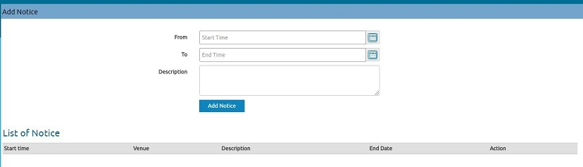
These messages will be posted for certain time only.From and To indicates start date and end date respectively of that message.
- Create a New Patient
- Click on the Create New Patient button on the top left of the screen as shown in the image below.
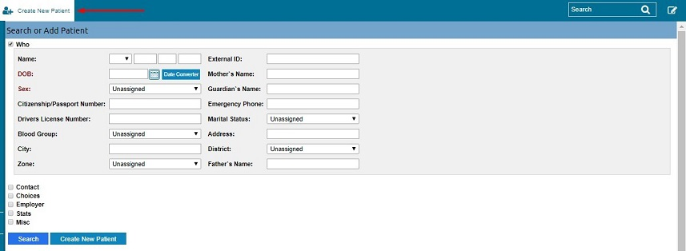
- Click on the checkbox as shown in the figure below to reveal its content and fill up the patient details and press
Create New Patient on the bottom of the page. Note that entering the age of the patient will auto convert the patient's age. To use this facility simply type the age of the patient in the D.O.B section and foucus out(click somewhere else) to convert age into date in yyyy-mm-dd format as shown in the image below.
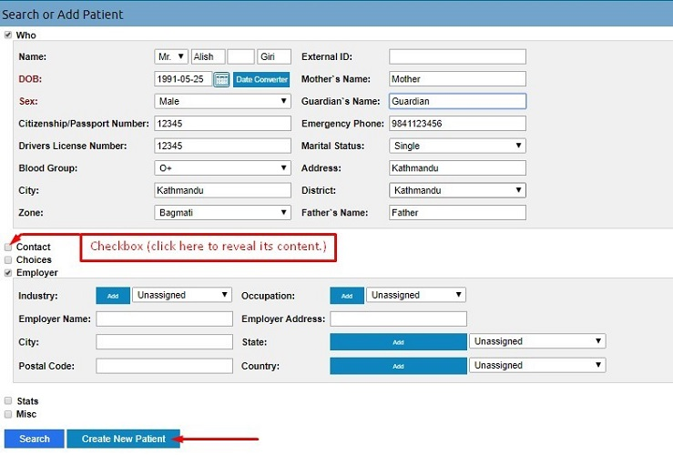
Here,
-
Who section contains primary details and if any mandatory field is missed out then a message will be displayed,
and missing fields will be marked red.
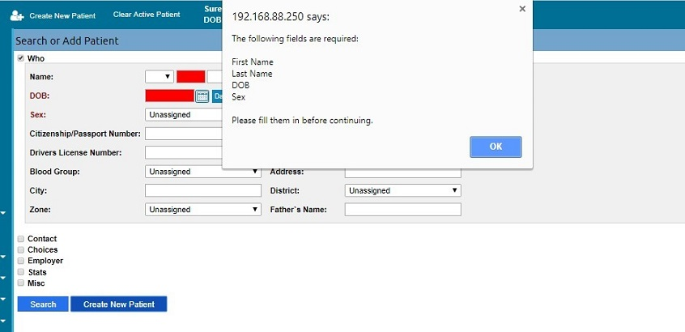
- Contact: This is the contact details of the patient.

- Choices: Patient's custom preferences.
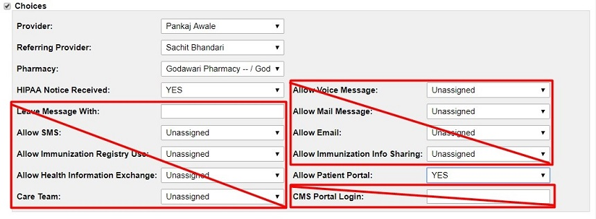
- Provider: This is the Doctor.
- Referring Provider: Provider reffering to another provider.
- Pharmacy: Pharmacy that patient prefers.
- HIPAA Notice Received: The HIPAA Privacy Rule mandates that health care providers distribute a Notice of Privacy Practices to all patients. The Notice of Privacy Practices also describes the HIPAA defined patient rights related to use and disclosure of the individual's health information.
- Leave Message With: Not Applicable.
- Allow SMS: Not Applicable.
- Allow Immunization Registry Use: Not Applicable.
- Allow Health Information Exchange: Not Applicable.
- Care Team: Not Applicable.
- Allow Voice Message: Not Applicable.
- Allow Mail Message: Not Applicable.
- Allow Email: Not Applicable.
- Allow Immunization Info Sharing: Not Applicable.
- Allow Patient Portal: This option detemines wheather to give patient access to the patient portal or not. This configuration will appear on Patient Demographic page on top, next to the patient's name.
- CMS Portal Login: Not Applicable.
-
Employer: Current employer of the patient.
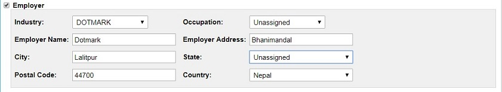
-
Stats: Full background of the patient.
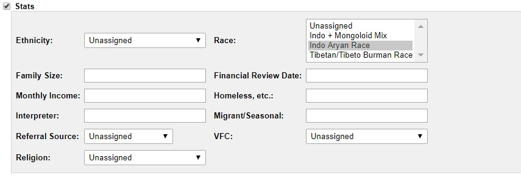
-
Misc: Deceased status of the patient.
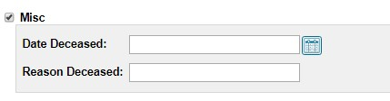
NOTE: Creating a new patient will first check if any existing patients matches the current detail of the patient, if
non-item matches then click on Confirm Create New Patient.
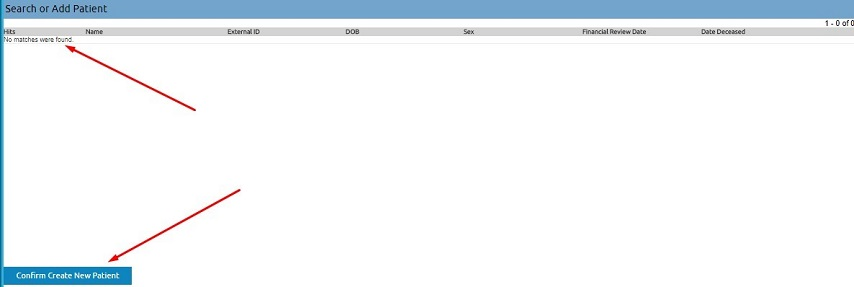
- After creating new patient, you will be navigated to the
Patient Demographics This page will contain all the personal information of the patient along with his/her
appointments and medical reports (Future medical report of the newly created patient).
- Patient Demographics
The following image illustrates how a patient portal can be configured and assigned. To allow Patient Portal access must be given from the Choices section which has been explained in Create New Patient section above.
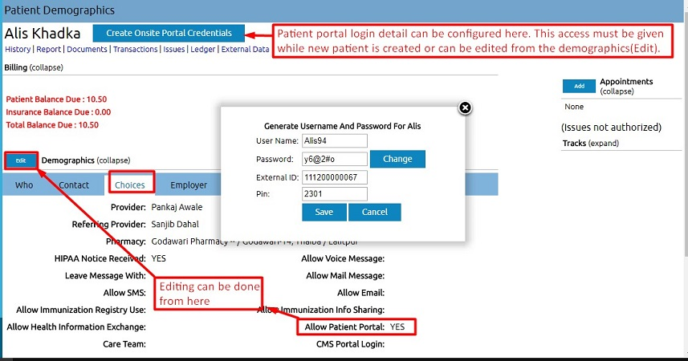
- This page enlists all the necessary information regarding the patient. All the future test results, charges and editing
of the records can be managed from here.
- This page will be updated frequently with every visit the record history will be published here by the doctors or other
responsible members.
- Any notes for that patient can be attached by clicking the
Notes link and following the instructions (Click on the Patient name to come back to the demographics page).
 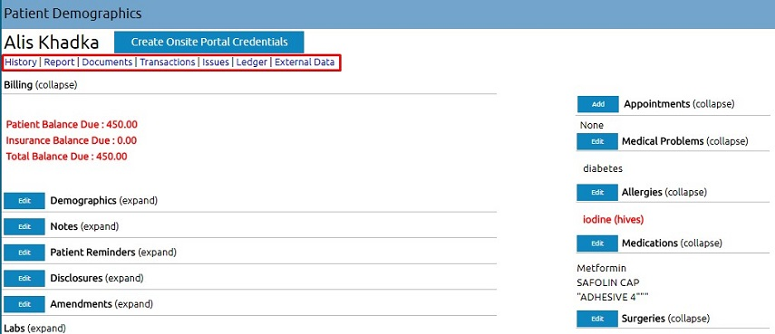
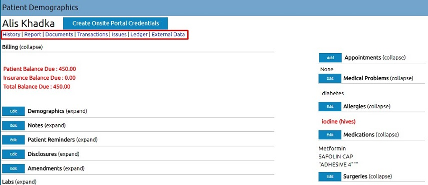
- The links below the name of the patient, as shown in the image below, gives further details of the patient.
-
History: Click history tab to view the following page. This section contains general history of the patient,
family's medical history, relatives medical history, lifestyle habits and other details. Click on the edit button to
add or edit any of the contents.
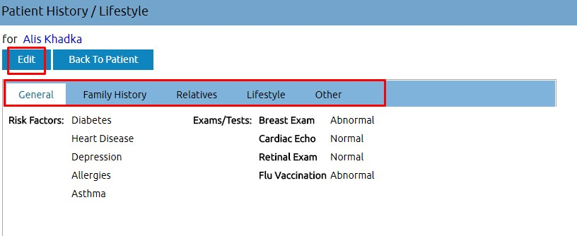
-
Report: CCR as shown in the image below exchanges most relevant and timely clinical information
about a patient among providers, institutions, or others. This has to be completed upon referral or transfer or other transition of a
patient from one caregiver to another. To be completed by Physicians, Nurses, Ancillary providers (e.g., social work, physical therapy, occupational
therapy). CCD is an electronic document exchange standard for sharing patient summary information. Summaries include the most commonly needed pertinent information about current and past health status in a form that can be shared by all computer applications, including web browsers, electronic medical record (EMR) and electronic health record (EHR) software systems.
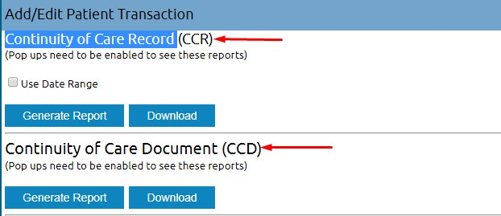
- Documents: Click Documents to upload images files of the test conducted like x-rays or a pdf file of some kind. Select a category and upload a files related to the subject to keep record of the active patient.
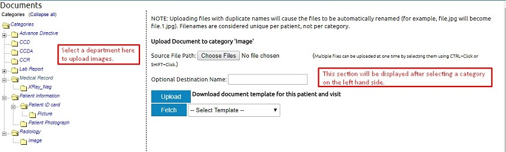
- Transactions:
- Issues:
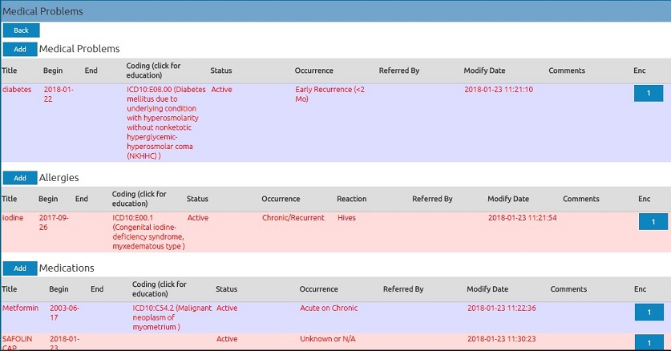
- Ledger: Doctors do not have access to this option.
- External Data:
- Searching an Existing Patient
Patients search can be done from the search bar or the create new patient page as shown in the image below.
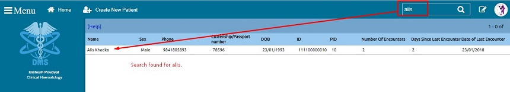
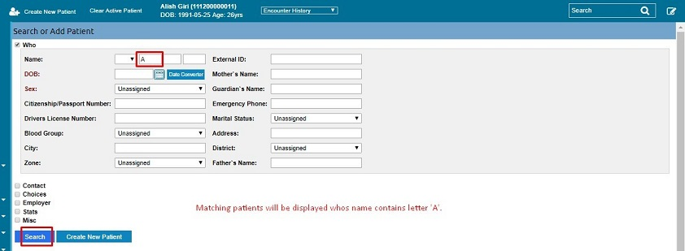
After selecting a patient, A button will appear at the top of the page called active patient. This will stay active until it is cleared using the Clear Active Patient button as shown in the image below.
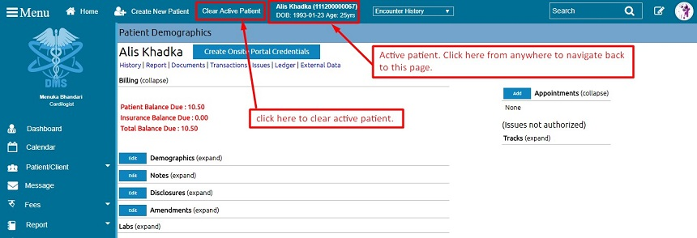
4.a Encounters
Encounter history stores all the active patient visits in the past.
Note: Make sure to select a patient to make this section visible. This patient will be an active patient in the DMS system until the Clear Active Patient button is pressed.
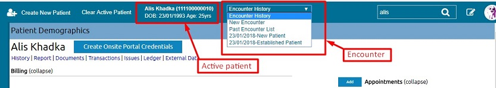
New Encounter will display the following form. This encounter will be created for the active patient i.e.Alis Khadka, as shown in the image below. Please fill in the details as required and save it for future reference.
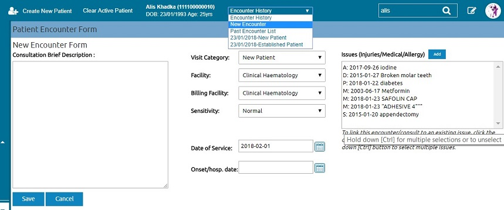
All the past encounters of the active patient will be displayed in this section. The following patient just have one encounter.
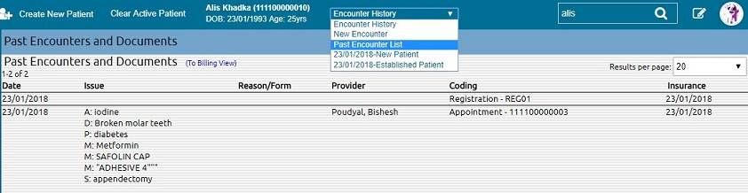
Active patient's encounter history will be displayed as a list in this dropdown as shown in the image below.
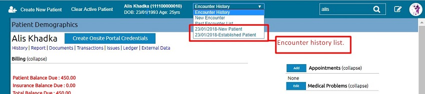
- Creating/Editing Appointments
Editing Appointment can be simply done by clicking the Appointment
detail. This will navigate to the editing page.
6.
Dashboard
Dashboard shows list of options that you can choose from,
-
Appointment:
It shows the list of patients’ appointments. It contains all past,
present and future appointments details. You can also select certain
date to view appointments for that date. Press Today to see
present/today’s appointments.

-
Calendar:
Select required date, department (from the dropdown, below Providers) and provider to view their appointment on the time
frame on the right side. You can also create appointments by clicking
on the time. The white box in the screen shows that time is been
selected, clicking on it will navigate user to the create new
appointment page.

There are three options for viewing calendar. They are day view, week view and month view, located on the top-right of the
calendar page. Patients will be categorized based on the provider selected.
-
Test
Status:
This shows list of all tests that is pending, has been sent for
processing and list of other options from the dropdown as shown below.
Selected list can be printed from the printer icon or can also be
exported to CSV (an Excel format list).

-
Order
List:
This displays procedure order list of selected date.
-
Quick Order:
Create an instant procedure order from here. Search an existing patient
from the Search Patient or create a new patient from here
itself and proceed to the next page by clicking save.
Here on the right-hand side of the screen,
Ordering Provider:
Doctor is selected here.
Order Date:
Current order of the order.
Internal Time Collected:
Sample collected precise time.
Priority:
Test priority.
Status:
Status of the test conducted. Either pending, routed (in process),
completed or canceled.
Clinical History:
Previous tests results of the patient.
Procedure Type:
Procedure type contains different types of test that a patient can perform.

NOTE: Laboratory test is the procedure type selected here in the
image below. Click on the field next to Laboratory test, below Add
Procedure
and select required test codes and click on the one you need. To
discard this selected item. Click on the selected item and press
Erase option from the pop up.


-
Doctor:
This shows the list of doctors with their working hours.

-
IPD:
Hospital Inpatient Care (IPD) requires patient with medical problem
that is serious enough for a doctor to admit into the hospital for an
overnight stay. Select required task from the list in IPD section.

To admit a patient, click on Admit a Patient and fill up
the form and press save.

-
Nurse:
Click here to see nurses’ availability.
-
Patient:
Shows list of all patients.
-
Invoice:
Invoice detail of the entered invoice number can be view from here.
-
Refund:
To process refunds first enter the invoice number and follow the
instructions.
-
Dispense:
Patients use this facility for purchasing their prescribed medication.
-
Resources:
==========================================
-
Department:
This enlist all the different department in the Hospital and clicking
on a specific department shows the list of doctors and nurses
associated with that department and his/her availability.

On each department tab, the logo on the left and right represents doctors
and nurses respectively, and the number next to them indicate number of
doctors and nurses in that section.
7.
Calendar
This is the same as calendar described in the dashboard section.
8.
Appointment
This is the same as appointment described in the dashboard section.
9.
Patient/Client
Patient:
This shows the list of all patients.
New/Search:
Create new patient and search existing patient as described in the General section.
Import:
It contains two options Upload and Pending Approval. On clicking Upload the
following screen will be displayed.

Patient Education:
Search any information on the web from here.

Chart Tracker:
Track patients with this function. Enter the Patient ID to
view the information.
10.
Message:
History of sent messages will be displayed here with details like from,
patient, type, date and status. Click Add New to create message and send it
to the respective patient.


11.
Medical Calculator:

Body Mass Index (BMI) calculator is an established measure utilized by
physicians and health experts to determine weight status (i.e. underweight,
overweight or within a healthy weight range). Use this calculator to find
out what patients BMI can tell about his/her health and well-being.
12.
IPD:
This is the same as IPD described in the dashboard section.
13.
Fees:
=========================================
14.
Report:
Clients:
Clinic:
Account:
Billing:
Visits:
Procedures:
Insurance:
Services:
15.
Procedures:
Providers:
Configuration:
Load Compendium:
Batch Result:
Electronic Reports:
Lab Document:
16.
Radiology:
Configuration:
radiology test list provided by the hospital.
17.
Inventory:
Inventory keeps records of the pharmacy medicines.
Management:
Add new drugs or search new drug
New lot information.
Destroyed:
Transaction:
18.
Administration:
Global:
Configuration of the DMS System.

Facilities:
Hospital’s facilities can be added and edited here as shown below. Click on
any name of the facilities to edit content.

IPD Room:
Manage patients’ rooms for different departments. It also sums up beds
availability and other equipment.
Users:
Displays list of users with details on specific user information.
Users:
Displays all the internal and external users. Administrator can manage user
records here.
Provider Price:
Providers/Doctors charges on different codes with description can be added
and edited here.
Practice:
Show list of DMS Service users.
Codes:
=======================================
Layouts:
Helps to manage all the forms in DMS. Hiding different input fields,
editing mandatory and optional fields, renaming, adding group and many more
can be done from here.
Lists:
ACL:
Access Control List (ACL) manages permission rights to access different
department of the DMS service. This is used for security purposes. Not any
users can access all the different departments/sections of DMS service.
Administrator decides on this.
Files:
==================================
Backup:
This is used to creating backup file for safety reasons.
Rules:
Plan and Rule configuration can be done from here.
Alerts:
Clinical decision rules alert manager.
Patient Reminders:
================================
Other:
=================================
Order Catalog:
BatchCom:
New Documents:
Document templates:
Preferences:
User Terms and Policy:
19.
Events:
This topic is described in General section 1b.
20.
Notice:
This topic is described in General section 1b.
21.
My Account:
Password:
Change your password here.
Authorizations:
Address Book:
Office Notes:
Configure Tracks:
22.
About Us:
Provides information about DMS.
23.
Log Out:
This will end your session and will redirect you to the login page.